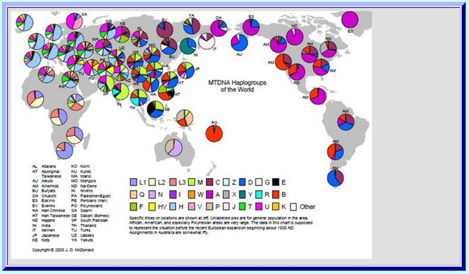

|
Back to Homepage
Page2 of Part2: Looking Mitochondrial Eve
1.The beginning of the "Mitochondrial Eve Theory"
In 1987, the molecular biology research teams of Professor Allan Wilson from the University of California at Berkeley and Professor Rebecca Cann from University of Hawaii published a seminal article in Nature. Analysis of mitochondrial DNA from the placenta of 147 women from different ethnic groups around the world, these researchers showed that the mitochondrial DNA from these ethnic groups shared a high degree of similarity in their DNA sequences. On average, the difference is only around 0.32% that equivalent of 50 nucleobase difference on the mitochondrial DNA.
This difference is even smaller than those found in different ethnic groups among African gorilla. This amazing discovery enabled Wilson and Cann to conclude that the mitochondrial DNA of modern women came from a female living in African approximately 200,000 years ago. She was the common grand mother of all ethnic groups around the world. Wilson and colleagues made the following statements:
1.”All these mitochondrial DNAs stem from one woman who is postulated to have lived about 200,000 years ago, probably in Africa."(Reference "Mitochondrial DNA and Human Evolution," Nature, 01 January 1987)
2."Genetic studies reveal that an African woman of 200,000 years ago was our common ancestor"(Reference:"The Recent African Genesis of Humans" SCIENTIFIC AMERICAN April 1992)
This is the beginning of the "Mitochondrial Eve Theory".
To trace ones ancestors using the aforementioned DNA decoding method was truly an eye opener for many scientists. This approach laid the first cornerstone for molecular anthropology’s DNA genealogy testing.
And from 1987 onwards, with the burgeoning research evidence proving the authenticity of the Wilson-Cann discovery, the voice of opposition to this theory has become weaker and weaker.
II. Mitochondria: Structure and Function

Figure 2-6 Structure of human mitochondrial
In 1894, the German biologist, Richard Altmann discovered a granular structure within the cytoplasm of animal cells for the first time. Based on its morphological characteristics, he named this mitochondria. It is a very important organelle within every cell. The average cell has between 1,000 to 2,000 mitochondria. However, this number varies quite a bit from several dozens to over 10,000. Within each mitochondria there is DNA type called “mitochondrial DNA” or mtDNA. Every mtDNA molecule has 16569 nucleobase pairs in 37 genes including 13 protein-coding genes, 22 tRNA genes and 2 rRNA coding genes.
.
Mitochondrial DNA (mtDNA) is inherited maternally. During embryonic development, there is no recombination of mtDNA from the father or mother. Moreover, genetic markers as a result of mutation in the mtDNA will be preserved. Therefore, mtDNA is an important tool to study the history of human genealogy. Similar to the importance of Y chromosome being the major research target in molecular anthropology, mtDNA is the pivotal reference for the identification and confirmatory of matrilineal relationship.
III. Genetic Characteristics of Mitochondrial DNA
Why is mtDNA a genetic marker of maternal inheritance?
Well, we all know that the fetus is a product of fertilization between the mother’s egg plus the father’s sperm. During fertilization, the head of the sperm with the nucleus inserts itself into the nucleus of the egg with the tail of the sperm left outside of the cytoplasm of the fertilized egg. What little mtDNA in the tail of the sperm is quickly eliminated.

Figure 2-7 fertilization of egg by sperm
Therefore, the mtDNA from the sperm has practically no influence on the mtDNA of the fertilized egg. Except for the 23 chromosomes from the nucleus of the father’s sperm, the rest of the organelles in the fertilized egg come entirely from the mother’s egg. Therefore, mtDNA of children only can come be inherited from the mother. The father’s mtDNA will not be inherited at all.
If there is no mutation in mtDNA starting from the oocyte to the fetal development, the fetal cells’ mtDNA not only is the same as the mother’s unfertilized egg but also the same as every cell in the mother. There is completely no influence from the genetic material from the father. When the fertilized embryonic cell undergoes cell division into two, the cytoplasmic contents are replicated for the two new cells. As the fertilized egg continues to develop into a fetus, fetal mtDNA resembles that of the mother. Therefore, in the absence of mutation, everybody’s mtDNA is the same as his/her mother, grandmother, great grandmother, great, great grandmother and so on.
However, as in the case of the Y chromosome, sudden mutational change can occur on certain locus of mtDNA after generations of matrilineal inheritance. This mutational change will be passed on to her daughter, her grand daughter and her great, grand daughter etc. thus accomplishing the maternal inheritance of mtDNA. From this we can see that mtDNA records the matrilineal inheritance. Since the mutation rate in mtDNA is low and predictable, it can serve as the basis of differentiating different maternal relationships of various ethnic groups.
When we analyze the location where the Y chromosome mutational change occurs, we don’t care if this occurs on the DNA gene or in the so called “desert” region. Similarly, in the analysis of the location of the mutational change in mtDNA, we don’t care if it occurs on the gene or non-gene region. This is where research in molecular anthropology and molecular medicine differ. Therefore, many molecular anthropologists have limited knowledge of the gene; Moreover, most researchers in medicine research not only do not understand the methodology used in molecular anthropology but they also are skeptical about this very discipline.
.
Although once been questioned, the Eve theory has been proven correct by increasing number of human DNA sample test results since 1987.
IV. The Cambridge Sequence and Revised Cambridge Sequence of Mitochondrial DNA
Other than the nucleus, human mtDNA is the only other material of any hereditary significance. Even before the announcement of the “Mitochondrial Eve Theory” in 1981, medical scientists from Cambridge already had the vision to establish a comprehensive sequencing of the DNA sequence in mitochondrial DNA. They chose an ordinary European whose samples were collected and analyzed for mtDNA. They found that mtDNA has a circular structure formed by 16,569 DNA nucleobase pairs. They completed the task of determining the entire DNA sequencing , confirmed the starting and ending points of the circular structure, and measured every DNA nucleobase on each locus.
Moreover, depending on the mtDNA’s function, they divided this circular structure in coding region and control region. The coding region has 15,447 nucleobase with 37 genes. The control region has 1,122 nucleotides base (1122 bp) located on locus from 16024 bp (reference 1) to 16589 bp and 1 bp to 576 bp. The starting point 1 and the ending point 16569 are both in the control region. They named this sequence the “Cambridge Reference Sequence” or abbreviated CRS. As a result of this sequencing, the Cambridge team established a reference standard for mtDNA research.
After analysis of many more samples, a small number of errors were found in the original “Cambridge Sequence” from 1981 Version. Nuclobase “C” on locus 3017 is replication of nucleobase “C” on locus 3016. Therefore, locus 3017 does not exist. Therefore, the total number mtDNA nucleobase should be 16568 and not 16569.Moreover, there are errors in 10 other nucleobases. The “Revised Cambridge Reference Sequence” abbreviated rCRS was then published in 1999. To avoid confusion in the numbering system of research results published before and after, locus 3017 remains untouched still with nucleobase “C” even though in reality this locus does not exist. ( please find “Revised Cambridge Sequence” at the following website:
http://www.phylotree.org/resources/rCRS_annotated.htm.
When the medical scientist originally completed the mtDNA sequencing task, may be they did not realize the importance of their work. At that time people did not know about the Mitochondrial Eve Theory. Most people believe that human beings from all over the world evolved from apes. No one knew at that time that mtDNA for all mankind around the world is so similar. However, medical doctors all around the world used the Cambridge Sequence as the gold standard when they diagnose inherited mitochondrial diseases regardless of the patients race or color of their skin.
The structure of mtDNA is shown below:

Figure 2-8 Partition of the mitochondrial DNA
V. Eve’s Necklace: Mitochondrial Eve’s DNA Sequence

Figure 2-9 Necklace-like Structure of Mitochondrial DNA Sequence
1. A Record of Mitochondrial DNA’s Function
Viewing mtDNA form the viewpoint of molecular medicine, mtDNA can be divided into the control region and the coding region including 37 structural genes. However, from the standpoint of molecular anthropology, all the regions of mtDNA are merely records of sudden mutational changes. Within the control region (marker loci from 16024 bp to 16569 bp and from 1 bp to 576 bp) is the region with the highest mutation rate in mtDNA known as the Hyper variable Region. The coding region is also a region which records mutational changes except in this mtDNA region the mutation rate is much lower than the control region approximately one twentieth that of the Hyper Variable Region.
Since the mutational rate in the control region of mtDNA is so much higher than the coding region, the control region records the maternal genealogy of the recent hundreds of generations. Indeed this form an archive of recent and middle age human history. This is also the region which mtDNA forensic medicine pays the most attention. If one wants to trace the historical records of our ancestors, perhaps up to several thousand generations ago, one needs to look for the mutational records within the coding region, which is similar to searching for STR and SNP on the Y chromosome genealogy tree.
2. The Eve’s Necklace
We have used a commonly known barcode on products to illustrate the genetic markers on the Y chromosome. Similarly, with mtDNA, we could use the necklace as an illustration. Mitochondrial DNA structure can be viewed as a string of pearls on the necklace. It has 16569 “pearls”. If we represent the nucleobases TACG with red, green, blue and black colors respectively (similar coloring scheme used in DNA sequencing), the result is a beautiful necklace. This “necklace” is found in every man and woman. It carries most of the “original color pearl sequence”, including the colored-pearls’ characteristics of each ethnic group and each family.
These pearls are the result of mutation to change color occurring on the “original color pearl sequence”. These changes are widely distributed on different part of the “necklace”. One can trace his/her ethnic group or family genealogy if one knows the “colors” on his/her 16569 pearls on his/her necklace. This colored pearl necklace records the history of mutational changes and even depicts his/her ancestors’ migration routes from Africa.
No one can falsify or deny the authenticity of this hereditary database. Thus it is indeed truly amazing that only the “necklace” of women was passed on down to future generations. Therefore, our hereditary is not the monopoly of our fathers. The genetic markers from the mother better symbolizes the feminine beauty. Only by comparing the sequence of the colored pearls on the “necklace”, one can tell the closeness of the maternal relationship even the origins of your ancestors from your mother side. What an amazing way to record ones genealogy!
VI. Global Human Mitochondrial PHylogenetic Tree and”Eve’s Marker” (the original mitochondrial DNA sequence)
1. Amazing Similarity of Mitochondrial DNA from People All Around the World
In the last three decades since the Cambridge team had determined the mtDNA sequence in 1981, scientists tried to unveil to mystery in the 16589 nucleobases from blood samples of several thousands of people all over the world. After Professor Allan Wilson and his colleagues proposed the “Eve theory” in 1987, many scientists worked under this “bold hypothesis” and began their careful verification. Statistics from around the world show that a minimum of several million of blood samples were collected an analyzed for mtDNA. A careful analysis of these data led to the establishment of the “Original mtDNA sequence”. The widely used “Updated comprehensive phylogenetic tree of human mitochondrial DNA variations” was built on this original sequence. Since this “Original mtDNA sequence” was the sequence before any mutational change took place, it must be the mtDNA sequence of mitochondrial Eve, our common grandmother who lived over 200,000 years ago.
[ See: Maternal mitochondrial DNA tree: PhyloTree.org - mtDNA tree Build 14 (5 Apr 2012) http://www.phylotree.org/previous_builds.htm]
The following points were well established quite early about mtDNA:
(1) Regardless of ethnicity, the number of mitochondria is the same. Although the number of mtDNA may differ for individuals because of repeat or loss of one or two nucleobase, Nonetheless the total nucleobase number is 16568 regardless of any ethnic group. Influenced by the error made by the original Cambridge sequence, the total number is 16569 since the 3017 locus “C” in fact does not exist.
(2) Among various ethnic groups, there is very little difference in nucleobases among the 16569 loci. For example, between whites and blacks the difference in nucleobases is no more than two hundreds. In other words, we have the same 16400 loci in all of us. If we use the string of pearls on the necklace as analogy, everybody on earth carries the mitochondrial “necklace” with the same color, same coding on this 16400 loci. If we create two four-colored necklaces each with 16400 loci, we will be greatly surprised by the amazingly accurate similarity. It is almost impossible for human beings to create such an amazing sequence, let alone having it evolved through natural selection.
(3) Mitochondria DNA of different ethnic groups has the same number and types of gene with a grand total of 37 genes : two types of coding rRNA genes; 22 types of coding tRNA genes and;13 types of protein-coding genes.
In fact, the aforementioned three points are enough evidence that all mankind shares a common mother. Any random evolution cannot create a sequence that is so similar to this known sequence. This deduction gives great confidence to molecular biologists in their search for the “original mtDNA sequence” of Mitochondrial Eve.

Figure 2-10 Mitochondrial lineage tree (“The Maternal Genetic Tree”)
2. The Original Mitochondrial DNA Sequence: “Eve’s Marker”
The scientists confirmed the original nucleobase letter on all loci of the sequence which becomes the original mtDNA sequence or Eve’s mitochondria DNA. The lucky lady’s genetic sequence we can now call it”Eve’s marker”. The mtDNA sequence of all her descendants is based on this original Eve’s mtDNA sequence. It is a sequence with predictable but rare (about 1%) mutations which allow us to be identified with certain haplogroups that we belong to.
3. The Establishment of the Mitochondrial Hereditary Lineage Tree (“The Maternal Genetic Tree” )
The mtDNA lineage tree is the result of collecting, screening and analyzing mtDNA from blood samples from various ethnic groups living in different regions all around the world. Since the ancestors of mtDNA matrilineal genealogy tree is deduced from modern mankind’s mtDNA, any deduction of maternal relationship regardless of the number of generations must fulfils three criteria:
(1) There must be at least two ethnic groups exist at the present time;
(2) The mtDNA from these two ethnic groups must show difference in mutational changes;
(3) There exists verifiable “ mutational rate” as reference.
Judging from the number of genetic markers on the matrilineal geneology tree, the average new mutation occurs after every 3,000 to 4,000 years of inheritance.
For example, in order to deduce the old grandmother wearing the H3e haplogroup marker, one must find at least two such ethnic groups who carry the H3e markers (A1618G, A15592G) . Then, one must compare the difference in their mtDNA and find out those markers with the maximum number of differences. One could then estimate the “mutational rate” and determine when did the old H3e grandmother wearing the “A1618G, A15592G” genetic markers lived.
The establishment of mtDNA “The Maternal Genetic Tree” is founded on aforementioned principle. In reality, this task was far more complex and required a very long research effort.
Two decades after the first mtDNA sequence (the Cambridge sequence) was established in 1981, and after the establishment of the mitochondrial “The Maternal Genetic Tree”, scientists found that the Cambridge sequence belongs to a member of the H2a2a haplogroup. From Figure 2-10 one can see the upward link of H3e and H2a2a haplogroups is the H haplogroup since H is their ancestors. There are 8 mutations from the H intersection to H3e and H2a2a. On average the four points on each line. This shows that the two groups had been separated for 12,000 to 16,000 years.
H2a2a and her H2a haplogroup primarily resides in Eastern Europe with only a small number residing in the U.K. From this standpoint, the person with the Cambridge sequence is not a representative of mtDNA of the British people.
VII .Naming the Mitochondrial Lineage Tree (“The Maternal Genetic Tree” )
Mitochondrial Eve had two daughters named L0 and L1’2’3’4’5’6 (see Figures 2-10). In the beginning of naming the mitochondrial lineage tree, what excited the scientists the most was that they felt they had discovered the matrilineal hereditary ‘line’. The beginning of this line was mitochondrial Eve and therefore she was given the letter ’L’. Daughters closest to her are given the letter ‘L’ plus a number. Therefore, one sees L0, L1, L2 etc. Because the discovery of the matrilineal heredity is completed gradually, therefore there is an actual difference between the daughters’ labels and the time in mankind’s history they lived. For example, L5 is not younger than L3. On the contrary, L5 is older than L3 by 50,000 years.
We have stated that the maternal ancestors are deduced from the mtDNA of modern men. We can see from the Figure that L3 and L4 share a common mother named L3’4’. These names may sound strange. However, they are quite scientific. Moreover, L3,4’ and L6 also had a common mother L3’4’6. L1’2’3’4’5’6 from back tracing revealed that these 8 mutational loci represent one woman who was the maternal ancestor of L1, L2, L3, L4,L5, and L6. She was mitochondrial eve’s eldest daughter.
We need to explain the fact that even though we call them grandmother, mother and daughter this is just a convenient way to show their hereditary relationship. In fact, they are separated by several thousands of years. For simplicity sake, many females in the middle were left out. L is just they representative. Nonetheless, L0 and L1’2’3’4’5’6’ were individuals who actually lived. In fact, all those with L actually were females who had lived in the past. They all came from one female –the “Mitochondrial eve”. Therefore, there are many hereditary lines and networks which link them together. Their descendants multiplied until the present time and they are you, me and our friends. Those without descendants had once lived but impossible for them to be represented on this matrilineal hereditary tree.
Once L constitute the matrilineal tree trunk, it is quite natural to label those after them as ‘M’ and ‘N’ . Subsequently, other letters are used to name those after ‘M’ and ‘N’.
.The Daughter with the Most Descendants: L3
In addition to inheriting the 32 mutation markers from L1’2’3’4’5’6’(include itself) to L3’4, she had formed three new genetic markers (A769G,A1018G,C16311T) thus getting a total of 35 genetic markers(Figure 2-10) .
We can say that she had 25 colored pearls not only on her necklace but also on all her children and grandchildren. L3 represents the first female who lived approximately 80,000 to 90,000 years ago on the northeastern part of Africa. Between 70,000 and 80,000 years ago, only her descendants and descendants of Y chromosome M168 male left the continent of Africa. This time period was deduced from the mutational loci on DNA. ¨In fact, the actual time period may be 10,000 years earlier.
Just imagine that around 80,000 years ago many females wearing the L3 necklace lived together with the Y chromosome M168 males also wearing the L3 necklace. For some reason, a group of people among them were called to leave the continent of Africa to go to the Arabian peninsula and other far off placed. For this reason, ethnic groups outside of Africa all wear the mitochondrial necklace with these 25 colored pearls. Yet, there are very few ethnic groups living in Africa still carry these markers. Those who carry these genetic markers were L3 descendants who never left Africa or those who once left but returned home.
On the maternal side of those who left the African continent, mitochondrial mutational changes occurred between 70,000 and 80,000 years ago and produced the first women (the representatives) of the N and M haplogroups. Today, almost everyone outside the continent of Africa is their descendants.
All the females and their daughters wearing the N and M necklace and their male companions with the M168 genetic markers migrated to Asia, Europe and later to Australia and America.
Another Way to Represent the Mitochondrial lineage tree (“The Maternal Genetic Tree”)

Figure 2-11 The Mitochondrial lineage tree

Attachment: Map of the mtDNA Haplogroups’ Distribution Around the World
Reference:
1. van Oven M, Kayser M. ,PhyloTree.org - mtDNA tree Build 14 ,(5 Apr 2012)
Previous Page 1 2 3 4 Next Page Back to Homepage
|